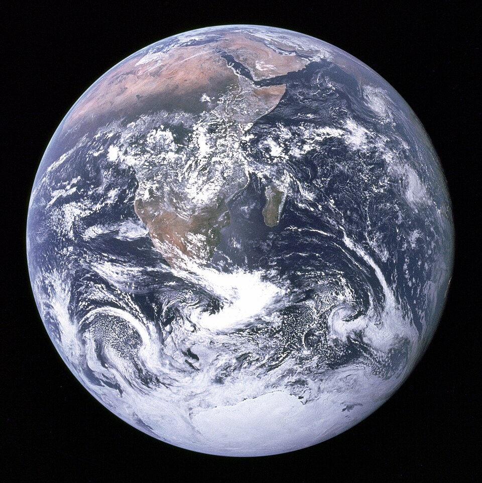

|  |
La Tierra es el tercer planeta del sistema solar, ubicado entre Venus y Marte, y el único conocido que alberga vida. Tiene una forma esférica ligeramente achatada en los polos y un diámetro de aproximadamente 12,742 km en el ecuador. Se formó hace unos 4,600 millones de años a partir de una nube de gas y polvo cósmico. Con el tiempo, se enfrió y se estructuró en capas internas: la corteza, el manto y el núcleo. |